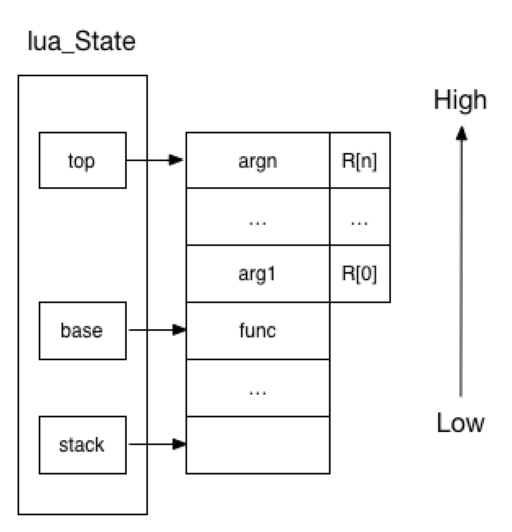

# Lua
Lua 是一种轻量的脚本语言，用标准 C 语言编写并且开源
Lua 常用于游戏开发、应用脚本、应用插件等
Lua 可以很方便的嵌入别的程序里，可以直接使用宿主语言（通常是 C 或 C++）提供的功能
Lua 支持面向过程编程、自动内存管理、语言内置模式匹配、闭包（通过闭包和 table 可以支持面向对象编程）、多线程
Lua 代码文件的后缀名为 .lua
建议：VS Code 中有很多关于 Lua 的扩展，可以方便编程和调试
# 基本语法
# 注释
单行注释：使用 -- 开头
--print("Hello World") |
多行注释：使用 --[[开始，使用]] 结束，为了美观，也可以使用 --]] 结束
注意：Lua 不支持嵌套注释
--[[ | |
print("Hello World") | |
print("Hello World") | |
--]] |
# 标识符
- 标识符用于定义一个变量、函数等，命名规则和 C 语言差不多
- Lua 保留的关键词较少，其中有很多都和 C 语言一样
- 以下划线开头连接一串大写字母的名字（比如 _VERSION）被保留用于 Lua 内部全局变量
# 数据类型
Lua 变量会自动分配数据类型，只需要为变量赋值即可
| 数据类型 | 描述 |
|---|---|
| nil | 表示一个无效值。在条件表达式中表示 false |
| boolean | true 或 false |
| number | 双精度点数 |
| string | 字符串 |
| function | 由 C 或 Lua 声明的函数 |
| userdata | 存储在变量中的 C 语言数据结构 |
| thread | 独立线程 |
| table | 关联数组，编号从 1 开始 |
# 变量
- Lua 变量有三种类型：全局变量、局部变量、表中的域
- 变量的默认值均为 nil，访问一个没有初始化的变量不会出错，得到的结果为 nil
- Lua 中的变量全是全局变量，在函数里声明的也是全局变量，除非用 local 显式声明为局部变量
- 变量在使用前需要先赋值，给一个变量赋值后就表明创建了一个全局变量
- 删除一个全局变量，只需要将变量赋值为 nil
print(a) | |
a = 10 | |
print(a) | |
a=nil | |
--[[ | |
运行结果 | |
nil | |
10 | |
--]] |
# 循环和条件
循环语句
--while | |
a = 2 | |
while (a > 0) do | |
print("Hello World") | |
a = a - 1; | |
end | |
--for | |
--for 的三个表达式在循环开始前一次性求值，以后不再进行求值 | |
-- a 从 0 开始，增加到 4 (a <= 4)，每次增加的值为 2 | |
for a = 0, 4, 2 do | |
print("Hello World") | |
end | |
-- 泛型 for | |
a = {1, 2, "3a"} | |
for i, v in ipairs(a) do | |
print(i, v) | |
end | |
--repeat...until 与 C 语言 do...while () 中的 while () 相反 | |
a = 2 | |
repeat | |
print(a) | |
a = a + 1 | |
until (a > 4) | |
-- 嵌套循环 | |
-- 选择排序 | |
a = {8, 1, 5, 3} | |
for i = 1, 4, 1 do | |
index = i | |
for j = i, 4, 1 do | |
if (a[index] > a[j]) then | |
index = j | |
end | |
end | |
temp = a[i] | |
a[i] = a[index] | |
a[index] = temp | |
end | |
for k, v in pairs(a) do | |
print(k, v) | |
end | |
-- break 可以跳出循环，与 C 语言一样 | |
-- goto 与 C 语言一样，不建议使用 |
条件语句
if (1) then | |
print("Hello World") | |
end |
# 运算符
这里仅指出与 C 语言不同的部分
算术运算符
- / 表示小数的除法
- // 表示取整的除法
- ^ 乘幂
关系运算符
- ~= 不等于
逻辑运算符
- and 逻辑与
- or 逻辑或
- not 逻辑非
其他
- .. 连接两个字符串
- # 返回字符串或表的长度。例如：
#"123"返回 3
运算符连接
- 除了 ^ 和 .. 以外，所有的二元运算符都是左连接的
运算符优先级
--[[ | |
1. ^ | |
2. not -（负号） | |
3. * / % | |
4. + -（减号） | |
5. .. | |
6. < > <= >= ~= == | |
7. and | |
8. or | |
--]] |
# 字符串
- 使用 ' 或 " 得到的结果完全相同
- 可以使用 [[]] 输入多行字符串
a = "aaa" | |
b = 'bbb' | |
c = [[ | |
a | |
b | |
c | |
]] |
| 常用函数 | 功能描述 |
|---|---|
string.byte(s [, i [, j]]) | 返回字符串中第 i 到 j 个字符的 ASCII 值，默认返回第一个字符的 ASCII 值 |
string.char(...) | 接收一系列整数，返回这些整数对应的字符组成的字符串 |
string.find(s, pattern [, init [, plain]]) | 在字符串 s 中查找符合 pattern 的模式，返回匹配的起止位置及匹配内容 |
string.format(formatstring, ...) | 返回一个格式化后的字符串，类似于 C 语言中的 printf |
string.gmatch(s, pattern) | 返回一个迭代器，用于遍历字符串 s 中所有匹配 pattern 的子串 |
string.gsub(s, pattern, repl [, n]) | 将字符串 s 中的 pattern 替换为 repl ，最多替换 n 次 |
string.len(s) | 返回字符串 s 的长度 |
string.lower(s) | 将字符串 s 转换为小写形式 |
string.match(s, pattern [, init]) | 在字符串 s 中匹配 pattern ，返回第一个匹配的子串 |
string.rep(s, n [, sep]) | 将字符串 s 重复 n 次，可以选择性地添加分隔符 sep |
string.reverse(s) | 返回字符串 s 的反转版本 |
string.sub(s, i [, j]) | 返回字符串 s 从第 i 到第 j 个字符的子串 |
string.upper(s) | 将字符串 s 转换为大写形式 |
模式匹配
- 与 正则表达式 不同，Lua 提供了一个轻量级的匹配机制
- 如果需要更复杂的正则表达式功能，可以通过 Lua 的扩展库（例如：LPeg）来实现。LPeg 是一个功能强大的模式匹配库，支持完整的正则表达式功能和更多自定义模式
| 符号 | 描述 |
|---|---|
. | 匹配任意单个字符（除了换行符）。 |
%a | 匹配任意字母（大小写皆可）。 |
%d | 匹配任意数字。 |
%s | 匹配空白字符（空格、制表符等）。 |
%w | 匹配字母和数字。 |
%p | 匹配标点符号。 |
%x | 匹配十六进制数字。 |
* | 匹配前面的模式零次或多次（贪婪匹配）。 |
+ | 匹配前面的模式一次或多次（贪婪匹配）。 |
- | 匹配前面的模式零次或多次（非贪婪匹配）。 |
? | 匹配前面的模式零次或一次。 |
^ | 匹配字符串的开头。 |
$ | 匹配字符串的结尾。 |
%bxy | 匹配成对的字符 x 和 y （如 %b() 匹配括号中的内容）。 |
() | 捕获模式，返回匹配到的子串 |
示例
-- 查找数字 | |
local s = "Lua 2025!" | |
local num = string.match(s, "%d+") | |
print(num) -- 输出：2025 | |
-- 捕获子串 | |
-- 一个括号就是一个子模式，子模式如果匹配成功就会被记录下来，按照先后顺序依次编号 | |
local s = "Hello Lua!" | |
local word = {string.match(s, "(%a+)%s(%a+)")} | |
print(word[1]) -- 输出一号捕获物 Hello | |
print(word[2]) -- 输出二号捕获物 Lua | |
-- 替换字符串 | |
local s = "abc123abc" | |
local new_s = string.gsub(s, "%d+", "456") | |
print(new_s) -- 输出：abc456abc |
# table
- 除了 nil 以外，可以将任意类型的值放入 table 中
- 同一个 table 可以存入多个不同类型的值
- Lua 中没有数组类型，而是使用 table 代替
- Lua 通过 table 来解决模块（module）、包（package）、对象（Object）
- 动态大小
- 引用类型
- 浅拷贝
-- 键值对 | |
t = {} | |
t[1] = 12 | |
t["wow"] = "wow" | |
-- 字典 | |
dic = { | |
name = "Lua", | |
version = "5.4", | |
is_dynamic = true | |
} | |
print(dic.name) | |
print(dic["version"]) | |
-- 数组 | |
array = {10, 20, 30, 40} | |
-- 嵌套（多维数组） | |
a = { | |
{1, 2, 3}, | |
{4, 5, 6}, | |
{7, 8, 9} | |
} |
常用函数举例
| 常用函数 | 描述 |
|---|---|
table.insert | 在指定位置插入一个元素。如果未指定位置，则在表的末尾插入 |
table.remove | 删除指定位置的元素，并返回被删除的值。如果未指定位置，则删除最后一个元素 |
table.concat | 将数组中的元素连接成一个字符串，可指定分隔符 |
table.sort | 对数组进行排序，可以指定自定义排序函数 |
table.pack | 将任意数量的值打包为一个 table，同时添加一个 n 字段表示元素数量 |
table.unpack | 将数组解包为单独的返回值 |
table.move | 将元素从一个表的指定范围移动到目标表的指定位置 |
table.clear | 清空表中的所有键值对 |
-- table.insert | |
t = {1, 2, 3} | |
table.insert(t, 4) -- 插入到末尾 | |
table.insert(t, 1, 0) -- 插入到索引 1 | |
-- table.concat | |
t = {"Lua", "is", "awesome"} | |
print(table.concat(t, " ")) -- 输出: Lua is awesome | |
-- table.move | |
t1 = {1, 2, 3, 4, 5} | |
t2 = {} | |
table.move(t1, 2, 4, 1, t2) -- 将 t1 的索引 2-4 的元素移动到 t2 |
# 函数
Lua 函数的定义
optional_function_scope function function_name( argument1, argument2, argument3..., argumentn) | |
function_body | |
return result_params_comma_separated | |
end |
- optional_function_scope：该参数是可选的指定函数是全局函数还是局部函数，未设置该参数默认为全局函数，如果你需要设置函数为局部函数需要使用关键字 local
- function_name：指定函数名称
- argument1, argument2, argument3..., argumentn：函数参数。这里的参数全都是形参（也就是局部变量）
- function_body：函数体，函数中需要执行的代码语句块
- result_params_comma_separated：函数返回值，Lua 语言函数可以返回多个值，每个值以逗号隔开
举例
-- 函数必须声明后才能调用 | |
-- a 是固定参数，必须赋值 | |
-- ... 是可变数量的参数 | |
function Test(a, ...) | |
local b = a + 1 | |
local list = {...} | |
local sum = 0 | |
for i, v in ipairs(list) do | |
print(v) | |
sum = sum + v | |
end | |
sum = sum + b | |
print("b = " .. b) -- .. 用于连接两个字符串 | |
print("sum = " .. sum) | |
end | |
Test(10, 1, 2, 3, 4, 5) |
# 闭包
闭包（Closure）是指 一个函数以及它所引用的词法作用域中的变量的组合。闭包允许函数在定义时捕获并保留其外部环境中的状态，哪怕这个环境已经不再存在。
闭包的特点
- 函数嵌套
- 内部函数会捕获并保留外部函数的局部变量
- 闭包可以记住它捕获的变量状态
闭包的用途
- 数据封装
- 使用闭包隐藏变量，使其只对特定函数可见
- 类似于类的私有成员变量
- 回调和事件监听
- 在事件驱动编程中，闭包可以用来保存上下文状态
- 高阶函数
- 通过闭包实现函数式编程的特性，如偏函数应用、柯里化等
- 模拟对象
- 在没有面向对象支持的语言中，闭包可以用来模拟对象的行为
举例
function create_counter() | |
local count = 0 -- 外部函数的局部变量 | |
return function() -- 返回一个匿名函数 | |
count = count + 1 -- 捕获并修改外部变量 count | |
return count | |
end | |
end | |
-- 创建一个计数器闭包 | |
counter = create_counter() | |
-- 调用闭包函数 | |
print(counter()) -- 输出 1 | |
print(counter()) -- 输出 2 | |
print(counter()) -- 输出 3 |
闭包的内存管理
- 闭包捕获的变量会被保存在堆内存中，只要闭包仍然被引用，这些变量就不会被垃圾回收。如果闭包不再被使用，捕获的变量会被回收
-- 闭包的生命周期 | |
function create_closure() | |
local x = 42 | |
return function() | |
return x | |
end | |
end | |
local closure = create_closure() | |
print(closure()) -- 输出 42 | |
closure = nil -- 闭包不再引用，x 被垃圾回收 |
# 迭代器
泛型 for
-- ipairs () 是 Lua 默认提供的迭代函数 | |
-- k 是索引，v 是值，全都是局部变量 | |
for k, v in pairs(t) do | |
-- body | |
end |
执行过程
- 初始化，计算 in 后面表达式的值，表达式应该返回泛型 for 需要的三个值：迭代函数、状态常量、控制变量。与多值赋值一样，如果表达式返回的结果个数不足三个会自动用 nil 补足，多出部分会被忽略
- 将状态常量和控制变量作为参数调用迭代函数（注意：状态常量储存的是引用）
- 将迭代函数返回的值赋给变量列表
- 如果返回的第一个值为 nil 循环结束，否则执行循环体
- 回到第二步再次调用迭代函数
Lua 迭代器
- 无状态的迭代器
- 不保留任何状态的迭代器
- 例如：ipairs ()，它遍历数组的每一个元素，元素的索引需要是数值
- 多状态的迭代器
- 迭代器需要保存多个状态信息
- 使用 闭包 或者将信息封装到 table 中
-- 无状态的迭代器 | |
-- 自定义 ipairs () | |
function iter(a, i) | |
i = i + 1 | |
local v = a[i] | |
if v then | |
return i, v | |
end | |
end | |
function my_ipairs(a) | |
-- 迭代函数 iter, 状态常量 a, 控制变量的初始值 0 | |
-- 这些值将被 for 循环用于控制迭代 | |
return iter, a, 0 | |
end | |
array = {10, 20, 30, 40} | |
-- iter 的两个返回值分别赋值给了 i 和 v | |
-- 从第二次开始，每次迭代只会调用函数 iter | |
-- 状态常量 a 引用了 array 的内存地址 | |
-- 之后的迭代过程中，即使 array 发生改变，也不会影响迭代结果 | |
for i, v in my_ipairs(array) do | |
print(i, v) | |
if (i == 1) then | |
array = nil | |
end | |
end |
-- 多状态的迭代器 | |
-- 计算斐波那契数列 | |
function fibonacci_iterator(max_count) | |
local count = 0 -- 控制变量：记录当前是第几个斐波那契数 | |
local prev, curr = 0, 1 -- 状态变量：两个数用于计算下一个斐波那契数 | |
-- 定义迭代器函数 | |
local function iter() | |
if count >= max_count then | |
return nil -- 当达到最大次数时结束迭代 | |
end | |
count = count + 1 -- 更新控制变量 | |
local next_value = prev + curr | |
prev, curr = curr, next_value -- 更新状态变量 | |
return count, prev -- 返回当前的索引和斐波那契数 | |
end | |
return iter -- 返回迭代器函数 | |
end | |
for index, value in fibonacci_iterator(10) do | |
print(index, value) | |
end |
# 元表和元方法
- 元表（metatable）用于自定义 table 的行为
- 注意：元表不会继承
- 算术操作
- __add：定义加法 +
- __sub：定义减法 -
- __mul：定义乘法 *
- __div：定义除法 /
- __mod：定义取模 %
- __pow：定义幂运算 ^
- 比较操作
- __eq：定义相等 ==
- __lt：定义小于 <
- __le：定义小于等于 <=
- 索引操作
- __index：当访问 table 中不存在的字段时调用
- __newindex：当给 table 中不存在的字段赋值时调用
- 其他操作
- __call：让 table 像函数一样被调用
- __tostring：自定义 tostring 函数的输出
- __metatable：保护元表，不允许外部修改或查看
- 相关函数
- setmetatable (,)：将元表绑定到目标 table
- getmetatable ()：获取目标 table 的元表
- Lua 查找一个表元素的规则
- 在表中查找，如果找到，返回该元素，找不到则继续
- 判断该表是否有元表，如果没有元表，返回 nil，有元表则继续
- 判断元表有没有 __index 方法
如果 __index 方法为 nil，则返回 nil
如果 __index 方法是一个表，则重复 1、2、3
如果 __index 方法是一个函数，则返回该函数的返回值
-- 算术操作 | |
-- 定义目标 table | |
t1 = {1, 2} | |
t2 = {3, 4} | |
-- 定义元表 | |
mt = { | |
__add = function(a, b) | |
return a[1] + b[1] | |
end | |
} | |
-- 设置元表到目标 table | |
setmetatable(t1, mt) | |
setmetatable(t2, mt) | |
-- 使用自定义的加法操作 | |
print(t1 + t2) -- 输出: 4 |
-- 比较操作 | |
t1 = { | |
value = 5 | |
} | |
t2 = { | |
value = 10 | |
} | |
mt = { | |
__lt = function(a, b) | |
return a.value < b.value | |
end | |
} | |
setmetatable(t1, mt) | |
setmetatable(t2, mt) | |
print(t1 < t2) -- 输出: true |
-- 索引操作 | |
t = {} | |
-- 定义元表 | |
mt = { | |
__index = function(tbl, key) | |
return "默认值" | |
end, | |
__newindex = function(tbl, key, value) | |
print("正在设置新的键值对:", key, value) | |
rawset(tbl, key, value) -- 手动设置值 | |
end | |
} | |
setmetatable(t, mt) | |
print(t.someKey) -- 输出：默认值 | |
t.someKey = "新值" -- 输出：正在设置新的键值对: someKey 新值 |
-- 其他操作 | |
t = {} | |
mt = { | |
__call = function(tbl, ...) | |
return "被当作函数调用" | |
end, | |
__tostring = function(tbl) | |
return "这是一个自定义的 table" | |
end | |
} | |
setmetatable(t, mt) | |
print(t) -- 输出：这是一个自定义的 table | |
print(t()) -- 输出：被当作函数调用 |
# 模块
模块类似于一个封装库，把一些公用的代码放在一个文件里，以 API 接口的形式在其他地方调用，有利于代码的重用和降低代码耦合度。
Lua 的模块是由变量、函数等已知元素组成的 table
-- mod.lua 文件中的代码 | |
mod = {} | |
mod.value = 10 | |
function mod.fun_1() | |
print("public function") | |
end | |
local function func_2() | |
print("private function") | |
end | |
function mod.func_3() | |
func_2() | |
end | |
return mod |
使用 require("name") 或 require "name" 加载模块
require("mod") | |
mod.fun_1() | |
mod.func_3() | |
m = require("mod") | |
m.fun_1() | |
m.func_3() |
加载机制
- Lua 首先会检查全局表 package.loaded，该表存储了所有已加载的模块
- 如果模块未加载，Lua 会根据 package.path（Lua 文件路径）和 package.cpath（C 程序库）搜索模块文件
- 根据文件后缀，Lua 调用不同的加载器
- .lua 文件：通过 loadfile () 加载并执行
- .so 或 .dll 文件：通过动态链接库加载
- 加载完成后，Lua 会将模块的返回值保存到 package.loaded 中，并返回给调用者
临时修改路径
- 通过代码对 package.path 的修改是临时的，只在当前 Lua 程序的运行期间有效
package.path = package.path .. ";.\\my_modules\\?.lua";用于分割多个路径.\\my_modules\\?.lua是新增路径?是占位符，也就是require("name")中的name
永久更改路径
- Windows 在系统环境变量中设置
新增一个环境变量 LUA_PATH，值为.\\my_modules\\?.lua;;;;表示新加的路径后面加上原来的默认路径
- Linux/macOS 在 .bashrc 或 .zshrc 中设置
export LUA_PATH="./my_modules/?.lua;;"
# C 包
- C 包在使用以前必须首先加载并连接，在大多数系统中最容易的实现方式是通过动态连接库机制
- Lua 在 package.loadlib 函数内提供了所有的动态连接的功能
- 这个函数有两个参数：库的绝对路径 和 初始化函数
- 一般情况下，将需要的库归类存放，创建一个 .lua 文件存放索引，然后将文件所在的目录加入到 LUA_PATH
创建 C 包流程
- 在 Visual Studio 中创建空项目，将配置类型改为动态库 (.dll)
- 导入所有 lua 源码（除了 lua.c、luac.c、Makefile）
- 新建 .cpp 代码
#include "lua.hpp" // Lua 头文件 | |
// 一个简单的加法函数 | |
static int lua_add(lua_State* L) | |
{ | |
int a = luaL_checkinteger(L, 1); | |
int b = luaL_checkinteger(L, 2); | |
lua_pushinteger(L, a + b); | |
return 1; // 返回结果数量 | |
} | |
// 函数注册表 | |
static const luaL_Reg mylib[] = | |
{ | |
{"add", lua_add}, // 注册函数 | |
{NULL, NULL} // 结束标记 | |
}; | |
// 模块初始化函数 | |
//luaopen_mylib 就是 初始化函数 | |
// 命名规则 luaopen_XXX 其中 XXX 就是 .dll 文件的文件名（或者在生成 .dll 文件后，将 .dll 文件的名称改为 XXX） | |
extern "C" __declspec(dllexport) int luaopen_mylib(lua_State* L) | |
{ | |
luaL_newlib(L, mylib); // 创建模块表 | |
return 1; // 返回模块表 | |
} |
- 生成项目，然后在 Debug 或 Release 文件夹中找到生成的 .dll 文件。将它复制到 你觉得合适的位置（例如：lua 源文件目录）
- 在 Lua 中编写代码调用
-- 我把 .dll 文件放到了 lua 源文件目录，所以可以直接这样写 | |
-- 否则，必须写出文件的完整路径 | |
path = "mylib.dll" | |
-- 初始化函数，必须与 cpp 代码中的初始化函数 相同 | |
init = "luaopen_mylib" | |
mylib = package.loadlib(path, init) -- 链接库 | |
mylib = mylib() -- 打开库 | |
-- 检查是否加载成功 | |
if not mylib then | |
error("Failed to load DLL: " .. (err or "unknown error")) | |
end | |
-- 调用导出函数 | |
print(mylib.add(10, 20)) |
# 协同程序
Lua 协同程序（Coroutine）是 Lua 中的一种轻量级线程机制，它允许以非抢占式多任务的方式实现并发。协同程序在 Lua 中被认为是线程的一个子集，它更接近于一种函数的挂起和恢复机制
Lua 协同程序拥有独立的堆栈，独立的局部变量，独立的指令指针
协同程序由 coroutine 模块提供支持
| 函数 | 描述 |
|---|---|
| coroutine.create() | 创建 coroutine，返回 coroutine， 参数是一个函数，当和 resume 配合使用的时候就唤醒函数调用 |
| coroutine.resume() | 重启 coroutine，和 create 配合使用。第一个返回值：布尔值，表示协同程序是否成功恢复。后续返回值：协同程序挂起时通过 coroutine.yield () 返回的值 |
| coroutine.yield() | 挂起 coroutine |
| coroutine.status() | 查看 coroutine 的状态，有三种：dead，suspended，running |
| coroutine.wrap() | 创建 coroutine，返回一个函数，该函数在调用时会直接运行协同程序 |
| coroutine.running() | 返回正在运行的 coroutine，一个 coroutine 就是一个线程，当使用 running 的时候，就是返回一个 coroutine 的线程号 |
-- 定义协同程序 | |
co = coroutine.create(function() | |
for i = 1, 3 do | |
print("Coroutine running: " .. i) | |
coroutine.yield() -- 挂起协同程序 | |
end | |
end) | |
-- 恢复协同程序 | |
print(coroutine.status(co)) -- suspended | |
coroutine.resume(co) -- 输出 Coroutine running: 1 | |
print(coroutine.status(co)) -- suspended | |
coroutine.resume(co) -- 输出 Coroutine running: 2 | |
print(coroutine.status(co)) -- suspended | |
coroutine.resume(co) -- 输出 Coroutine running: 3 | |
print(coroutine.status(co)) -- dead |
-- 生产者 - 消费者问题 | |
function producer() | |
return coroutine.create(function() | |
for i = 1, 5 do | |
print("Producing: " .. i) | |
coroutine.yield(i) -- 将值返回给消费者 | |
end | |
end) | |
end | |
function consumer(prod) | |
local status = {} | |
local value | |
while true do | |
-- 获取生产者的值 | |
status[1], value = coroutine.resume(prod) | |
status[2] = coroutine.status(prod) | |
-- 如果协同程序结束 | |
if (not status[1] or status[2] == "dead") then | |
break | |
end | |
print("Consuming: " .. value) | |
end | |
end | |
-- 测试 | |
p = producer() | |
consumer(p) |
线程和协同程序区别
| 特性 | Lua 线程 | Lua 协同程序 |
|---|---|---|
| 创建方式 | 使用 Lua C API 创建 | 使用 coroutine.create 创建 |
| 底层依赖 | 操作系统的多线程机制 | 纯 Lua 实现，运行在单线程环境中 |
| 并行能力 | 支持多核并行 | 不支持并行，只能切换执行权 |
| 切换方式 | 操作系统调度 | 显式调用 coroutine.resume / yield |
| 开销 | 高（需要操作系统资源） | 低（轻量级，纯 Lua 实现） |
| 适用场景 | 复杂的多任务或计算密集型场景 | 游戏开发、简单的状态管理和异步任务 |
| 线程隔离性 | 独立的 Lua 堆栈和环境 | 共享同一个 Lua 环境 |
# I/O
操作文件的语句： file = io.open (filename [, mode])
| mode | 描述 |
|---|---|
| r | 只读。文件必须存在 |
| w | 只写。若文件存在则清空文件内容，若文件不存在则新建文件 |
| a | 以附加的方式打开只写文件。若文件存在，写入的数据会被加到文件尾，若文件不存在则新建文件 |
| r+ | 在 r 的基础上增加 写 |
| w+ | 在 w 的基础上增加 读 |
| a+ | 在 a 的基础上增加 读 |
| b | 二进制模式，用于二进制文件 |
全局模式 io.function
| 方法 | 描述 |
|---|---|
io.open | 打开并返回一个文件句柄 |
io.input | 获取或设置当前默认输入文件 |
io.output | 获取或设置当前默认输出文件 |
io.read | 从默认输入文件读取内容 |
io.write | 写入内容到默认输出文件 |
io.flush | 刷新默认输出文件的缓冲区 |
io.close | 关闭默认文件（输入或输出） |
io.popen | 执行系统命令（获取命令的输出或与其交互） |
-- 以附加的方式打开文件 | |
file = io.open("test.lua", "a+") | |
-- 设置默认输入文件为 test.lua | |
io.input(file) | |
-- 输出文件第一行 | |
print(io.read()) | |
-- 关闭打开的文件 | |
io.close(file) | |
-- 写入到 test.lua | |
file = io.open("test.lua", "a+") | |
io.output(file) | |
io.write("--Hello, Lua!") | |
io.flush() -- 刷新缓冲区 |
-- io.popen 执行系统命令并读取输出 | |
-- "r": 读取命令的输出（默认） | |
-- "w": 向命令输入数据 | |
local handle = io.popen("ls -l", "r") | |
if handle then | |
local result = handle:read("*a") -- 读取所有输出 | |
print(result) | |
handle:close() | |
else | |
print("Failed to execute command") | |
end |
句柄模式 file:function
- 通过文件句柄操作文件
- 每个文件句柄是独立的，适合同时操作多个文件
- 不依赖全局的默认输入或输出文件
| 方法 | 描述 |
|---|---|
file:read | 按指定模式从文件中读取内容 |
file:write | 写入内容到文件 |
file:lines | 返回一个迭代器，用于逐行读取文件内容 |
file:flush | 刷新文件的缓冲区 |
file:seek | 设置或获取文件指针的位置 |
file:close | 关闭文件 |
-- 打开文件以写入 | |
local file = io.open("test.lua", "w") | |
file:write("--Hello, Lua!") -- 写入内容 | |
file:close() -- 关闭文件 | |
-- 打开文件以读取 | |
file = io.open("test.lua", "r") | |
local content = file:read("*all") -- 读取整个文件 | |
print(content) -- 输出: Hello, Lua! | |
file:close() -- 关闭文件 |
二者的主要区别
| 特性 | io.function 全局模式 | file:function 句柄模式 |
|---|---|---|
| 适用范围 | 作用于全局的默认文件 | 作用于特定的文件句柄 |
| 多文件操作 | 只能同时操作一个默认文件 | 可以同时操作多个文件 |
| 灵活性 | 较低，需要频繁更改默认文件 | 更高，操作独立文件句柄 |
| 效率 | 较低，因为频繁更改默认文件影响效率 | 较高，专注于特定文件操作 |
| 函数接口 | 与全局输入 / 输出文件交互的函数 | 文件句柄的成员函数 |
其他常用操作
-- 删除文件 | |
os.remove("test.txt") | |
-- 执行系统命令（只能检查是否成功，无法交互） | |
os.execute("mkdir my_folder") -- 创建文件夹 | |
if result == 0 then -- 检查是否成功 | |
print("File deleted successfully") | |
else | |
print("Failed to delete file") | |
end |
-- 复制文件（手动复制） | |
local function copyFile(src, dest) | |
local srcFile = io.open(src, "rb") -- 以二进制模式读取 | |
if not srcFile then | |
print("无法打开源文件：" .. src) | |
return false | |
end | |
local destFile = io.open(dest, "wb") -- 以二进制模式写入 | |
if not destFile then | |
print("无法创建目标文件：" .. dest) | |
srcFile:close() | |
return false | |
end | |
destFile:write(srcFile:read("*a")) -- 读取整个文件并写入 | |
srcFile:close() | |
destFile:close() | |
print("文件复制成功：" .. src .. " → " .. dest) | |
return true | |
end | |
copyFile("test.txt", "backup\\test.txt") | |
-- 复制文件（系统命令） | |
os.execute('copy "example.txt" "backup\\example.txt"') |
# 面向对象
# 面向对象
- 对象由属性和方法组成，在 lua 中使用 table 和 function 模拟出来
- 可以使用 metetable 实现继承
- 将 lua 中的一个 table 看做一个类，基于这个 table 声明变量和函数，即可实现一个类的模拟
- 命名规则：类中使用
:定义和访问函数，使用.访问变量
-- Class.lua 中的代码 | |
Class = {} -- 类 | |
Class.__index = Class -- 设置索引元方法 | |
Class.value = 10 -- 公共变量 | |
local a = 20 -- 私有变量 | |
function Class:new() | |
local obj = {} | |
setmetatable(obj, Class) -- 设置元表，使对象继承类的方法 | |
return obj | |
end | |
function Class:fun_1() | |
print("public function") | |
end | |
local function func_2() | |
print("private function") | |
end | |
function Class:func_3() | |
func_2() | |
end |
require("Class") | |
local obj = Class:new() | |
print(obj.value) | |
obj:fun_1() | |
obj:func_3() |
# 封装、继承、多态
封装、继承、多态
- 继承：设置子类的元表
- 方法重写：在子类中以相同的名称重新定义方法
- 变量
self：Class:new()中self就是Class
-- 父类 | |
Class = {} | |
Class.__index = Class | |
Class.value = 10 | |
function Class:new() | |
local obj = {} | |
setmetatable(obj, self) | |
obj.name = "name" -- 封装 | |
return obj | |
end | |
function Class:func() | |
print("Class:func()") | |
end | |
function Class:setName(name) | |
self.name = name | |
end | |
-- 子类 | |
SubClass_1 = Class:new() | |
SubClass_1.__index = SubClass_1 | |
SubClass_1.num = 20 | |
function SubClass_1:func() -- 重写 | |
print("SubClass_1:func()") | |
end | |
-- 子类 | |
SubClass_2 = Class:new() | |
SubClass_2.__index = SubClass_2 | |
function SubClass_2:func() -- 重写 | |
print("SubClass_2:func()") | |
end | |
-- 创建子类的对象 | |
local obj_1 = SubClass_1:new() | |
obj_1:setName("SubClass_1") | |
print(obj_1.name) | |
local obj_2 = SubClass_2:new() | |
obj_2:setName("SubClass_2") | |
print(obj_2.name) | |
-- 多态 | |
obj_1:func() | |
obj_2:func() |
# 注意 obj.fun 和 obj:fun 的区别
. 和 : 的区别是：冒号会自动传入调用者自身作为第一个参数 self，点号不会
-- 这两行代码完全等价 | |
obj:fun(10) | |
obj.fun(obj, 10) |
错误调用示例
-- 这样调用就会出错，因为此时 10 被赋值给了 self | |
obj.fun(10) | |
-- 上面的代码相当于给原本的参数传入 nil | |
obj.fun(10, nil) |
定义上的区别如下
-- 使用 obj:fun 定义 | |
-- 冒号定义会自动在参数列表最前面添加一个隐含的 self 参数 | |
function player:say(message) | |
print(self.name .. ": " .. message) | |
end | |
-- 使用 obj.fun 定义 | |
function player.say(self, message) | |
print(self.name .. ": " .. message) | |
end |
可以混合使用（但是不建议）
- 冒号定义后，也可以用点号调用，但必须手动传入对象
- 点号定义后，也可以用冒号调用，但函数的第一个参数必须用于接收 self
# 事件
使用 table 实现事件系统
-- 定义一个简单的事件管理器 | |
local EventManager = { | |
events = {} | |
} | |
function EventManager:subscribe(event, callback) | |
if not self.events[event] then | |
self.events[event] = {} | |
end | |
table.insert(self.events[event], callback) | |
end | |
function EventManager:trigger(event, ...) | |
if self.events[event] then | |
for _, callback in ipairs(self.events[event]) do | |
callback(...) | |
end | |
end | |
end | |
-- 使用事件管理器 | |
EventManager:subscribe("player_jump", function(player) | |
print(player.name .. " 跳跃了！") | |
end) | |
-- 触发事件 | |
local player = { | |
name = "玩家1" | |
} | |
EventManager:trigger("player_jump", player) |
模拟一个按钮对象
function create_button(label) | |
local button = {} -- 用来模拟对象的表 | |
local event_listeners = {} -- 用来存储事件监听器的表 | |
local is_enabled = true -- 按钮是否可用 | |
-- 方法：设置按钮标签 | |
function button:set_label(new_label) | |
label = new_label | |
end | |
-- 方法：获取按钮标签 | |
function button:get_label() | |
return label | |
end | |
-- 方法：设置按钮状态 | |
function button:set_enabled(enabled) | |
is_enabled = enabled | |
end | |
-- 方法：获取按钮状态 | |
function button:is_enabled() | |
return is_enabled | |
end | |
-- 方法：注册事件监听器 | |
function button:on(event_name, listener) | |
if not event_listeners[event_name] then | |
event_listeners[event_name] = {} | |
end | |
table.insert(event_listeners[event_name], listener) | |
end | |
-- 方法：触发事件 | |
function button:trigger(event_name, ...) | |
if not is_enabled then | |
print("Button is disabled") | |
return | |
end | |
local listeners = event_listeners[event_name] | |
if listeners then | |
for _, listener in ipairs(listeners) do | |
listener(...) -- 调用回调函数 | |
end | |
end | |
end | |
return button | |
end | |
-- 创建按钮对象 | |
local button = create_button("Submit") | |
-- 注册事件监听器 | |
button:on("click", function() | |
print("Button was clicked!") | |
end) | |
button:on("click", function() | |
print("Another listener for the same click event.") | |
end) | |
button:on("hover", function() | |
print("Button is hovered.") | |
end) | |
-- 模拟事件触发 | |
print("Initial label:", button:get_label()) -- 输出 Submit | |
button:trigger("click") -- 触发 click 事件 | |
button:trigger("hover") -- 触发 hover 事件 | |
-- 更新按钮标签和状态 | |
button:set_label("Send") | |
button:set_enabled(false) -- 禁用按钮 | |
print("Updated label:", button:get_label()) -- 输出 Send | |
-- 再次触发事件（按钮被禁用，事件不执行） | |
button:trigger("click") -- 输出 Button is disabled |
# 错误处理
- 错误捕获：通过 pcall 和 xpcall 捕获错误
- 错误抛出：通过 error 和 assert 抛出自定义错误
- 调试信息：通过 debug.traceback 获取错误发生时的调用栈信息
错误捕获 pcall(function, ...)
- 第一个值为布尔值，true 表示成功，false 表示发生错误
- 后续值为函数的返回值或错误信息
function divide(a, b) | |
return a / b | |
end | |
status, result = pcall(divide, 1, nil) -- 安全调用 | |
if status then | |
print("Result:", result) | |
else | |
print("Error:", result) -- 输出错误信息 | |
end |
错误捕获 xpcall(function, errorHandler)
- 与 pcall 类似，但允许提供一个错误处理函数，用于处理错误信息
function divide(a, b) | |
return a / b | |
end | |
function errorHandler(error) | |
return "Caught error: " .. error | |
end | |
status, result = xpcall(function() | |
return divide(1, nil) | |
end, errorHandler) | |
if status then | |
print("Result:", result) | |
else | |
print(result) | |
end |
抛出错误 error(message, level)
- message：错误信息
- level：堆栈级别
- 0 不添加错误位置信息
- 1 默认，指出错误位置（文件 + 行号）
- 2 二层堆栈
function checkValue(value) | |
if value < 0 then | |
error("Value must be non-negative!", 2) -- 抛出错误，2 表示上两层堆栈 | |
end | |
return value | |
end | |
checkValue(-1) -- 运行到这里会报错 |
抛出错误 assert(condition, message)
- 简化错误抛出
function divide(a, b) | |
assert(b ~= 0, "Division by zero!") -- 条件不满足时抛出错误 | |
return a / b | |
end | |
print(divide(10, 2)) -- 输出: 5 | |
print(divide(10, 0)) -- 运行到这里会报错 |
调试信息 debug.traceback(message, level)
- 提供错误发生时的调用栈信息
function level1() | |
error("An error occurred!") | |
end | |
function level2() | |
level1() | |
end | |
function func() | |
status, err = pcall(level2) | |
if not status then | |
print(debug.traceback(err, 1)) -- 输出调用栈信息 | |
end | |
end | |
func() |
# Debug
| 方法 | 功能描述 |
|---|---|
debug.traceback(message, level) | 返回调用栈信息。 message 是前缀错误信息， level 指定从第几层堆栈开始 |
debug.getinfo(thread, func or level, [what]) | 获取函数或调用栈的元信息。 what 是可选参数，指定返回哪些信息，在表格下方有更多解释 |
debug.getlocal(thread, level, local_index) | 获取指定调用栈层级的局部变量。 local_index 是变量的索引（从 1 开始） |
debug.setlocal(thread, level, local_index, value) | 修改指定调用栈层级的局部变量值 |
debug.getupvalue(func, upvalue_index) | 获取闭包的上值。 upvalue_index 是上值的索引（从 1 开始） |
debug.setupvalue(func, upvalue_index, value) | 修改闭包的上值 |
debug.upvalueid(func, upvalue_index) | 获取闭包上值的唯一标识 ID，用于比较两个上值是否相同 |
debug.upvaluejoin(func1, upvalue_index1, func2, upvalue_index2) | 将 func1 的上值与 func2 的上值绑定，两个函数共享同一个上值 |
debug.gethook([thread]) | 获取指定线程的调试钩子函数及其设置 |
debug.sethook([thread], hook, mask, [count]) | 设置调试钩子函数。 mask 可以是 "c"（函数调用）、"r"（函数返回）、"l"（每行代码） |
debug.getmetatable(value) | 获取指定对象的元表 |
debug.setmetatable(value, metatable) | 设置指定对象的元表 |
debug.getregistry() | 返回 Lua 的全局注册表，用于存储全局变量和内部状态 |
debug.debug() | 启动一个简单的交互调试器 |
debug.getinfo 中的可选参数用来指定需要返回的函数信息的类型
- n：函数的名称及相关信息（如果有）。包括以下字段：
- name：函数名称（如果可以推断出来）
- namewhat：函数名称的来源描述（如 "global"、"local"、"method" 或 ""）
- S：函数定义的来源信息。包括以下字段：
- source：定义函数的源码文件路径（以 @ 开头）或字符串（以 = 开头）
- short_src：简短的源码路径（仅文件名）
- linedefined：函数起始定义的行号
- lastlinedefined：函数定义结束的行号
- what：函数类型（如 "Lua" 表示 Lua 函数，"C" 表示 C 函数）
- l：当前函数调用时的行号
- currentline：当前执行的行号
- f：函数本身
- func：返回该函数的引用
- L：一个布尔值，表示函数中所有行的可执行代码是否存在（不常用）
-- 获取调用栈信息 | |
print(debug.traceback("debug:", 2)) | |
-- 获取函数信息 | |
function func(a, b) | |
return a + b | |
end | |
info = debug.getinfo(func, "nSl") | |
print(info.short_src, info.linedefined) | |
-- 获取并修改局部变量 | |
function test() | |
local a = 10 | |
print(debug.getlocal(1, 1)) -- 输出: a 10 | |
debug.setlocal(1, 1, 20) | |
print(a) -- 输出: 20 | |
end | |
test() | |
-- 设置调试钩子 | |
debug.sethook(function(event) | |
print("Hook triggered:", event) | |
end, "crl") |
# 垃圾回收
- Lua 采用了自动内存管理，不需要关心内存的分配和回收
- Lua 运行了一个垃圾收集器来收集所有不可能再访问到的对象
- 收集器使用这两个数字来控制垃圾收集循环： 垃圾收集器间歇率 和 垃圾收集器步进倍率
- 垃圾收集器间歇率：控制收集频率
- 垃圾收集器步进倍率：控制收集器运作速度相对于内存分配速度的倍率。增大这个值不仅会让收集器更加积极，还会增加每个增量步骤的长度。默认值是 200，这表示收集器以内存分配的 "两倍" 速度工作
垃圾回收器函数 collectgarbage()
collectgarbage("collect")：做一次完整的垃圾收集循环collectgarbage("count")：以 K 字节数为单位返回 Lua 使用的总内存数。 这个值有小数部分，所以只需要乘上 1024 就能得到 Lua 使用的准确字节数（除非溢出）collectgarbage("restart")：重启垃圾收集器的自动运行collectgarbage("setpause")：将 arg 设为收集器的 间歇率。 返回 间歇率 的前一个值collectgarbage("setstepmul")：返回 步进倍率 的前一个值collectgarbage("step")：单步运行垃圾收集器。 步长 "大小" 由 arg 控制。 传入 0 时，收集器步进（不可分割的）一步。 传入非 0 值， 收集器收集相当于 Lua 分配这些多（K 字节）内存的工作。 如果收集器结束一个循环将返回 truecollectgarbage("stop")：停止垃圾收集器的运行。 在调用重启前，收集器只会因显式的调用运行
table = {"0", "7", "2", "1"} | |
print(collectgarbage("count")) | |
table = nil | |
print(collectgarbage("count")) | |
print(collectgarbage("collect")) | |
print(collectgarbage("count")) |
# Lua 虚拟机
虚拟机是使用代码实现的用于模拟计算机运行的程序。每一门脚本语言都会有自定义的 opcode (operation code, 操作码)。一般的编译型语言，比如 C 语言等，经过编译器编译之后生成的都是与当前硬件环境相匹配的汇编代码；而脚本型的语言，经过前端的处理之后，生成的就是 opcode，再将 opcode 放在这门语言的虚拟机中逐个执行。所以，虚拟机是个中间层，它处于脚本语言前端和硬件之间的一个程序，有些虚拟机是作为单独的程序独立存在，而 Lua 作为一门嵌入式的语言是附着在宿主环境中的。
一个虚拟机，其核心问题有两个
- 如何保存整个执行环境
- 如何分析源代码文件生成 Opcode，又如何执行 Opcode 指令
# Lua 栈

左边的框中的是 lua_State 及其三个相关的 Lua 栈成员。中间是一个函数栈的结构，其最底部是函数相关的数据，紧挨着它的依次是该函数的参数；右边是函数寄存器数组与函数栈数据的对应关系
# lua_State
Lua 中的每个线程都有一个 lua_State
lua_State 的部分初始化代码如下
(lstate.c) | |
static void stack_init (lua_State *L1, lua_State *L) { | |
// .... | |
/* initialize CallInfo array */ | |
L1->base_ci = luaM_newvector(L, BASIC_CI_SIZE, CallInfo); | |
L1->ci = L1->base_ci; | |
L1->size_ci = BASIC_CI_SIZE; | |
L1->end_ci = L1->base_ci + L1->size_ci - 1; | |
/* initialize stack array */ | |
L1->stack = luaM_newvector(L, BASIC_STACK_SIZE + EXTRA_STACK, TValue); | |
L1->stacksize = BASIC_STACK_SIZE + EXTRA_STACK; | |
L1->top = L1->stack; | |
L1->stack_last = L1->stack+(L1->stacksize - EXTRA_STACK)-1; | |
/* initialize first ci */ | |
L1->ci->func = L1->top; | |
setnilvalue(L1->top++); /* `function' entry for this `ci' */ | |
L1->base = L1->ci->base = L1->top; | |
L1->ci->top = L1->top + LUA_MINSTACK; | |
} |
在这个函数中初始化了两个数组，分别保存 Lua 栈和 CallInfo 结构体数组
CallInfo 结构体，是每次有函数调用时都会去初始化的一个结构体，它的成员变量中有 top,base 指针，同样的是指向 Lua 栈的位置，所不同的是，它关注的仅是函数调用时的相关位置。从代码中可以看出，CallInfo 数组是有限制的，在 Lua 中的嵌套函数调用层次也是有限制，不能超过一定数量
lua_State 初始化时先创建了一个 TValue 的数组，由 stack 保存它的首地址；接下来将一个 nil 值压入栈中，最后 base 和 top 成员都指向 stack 的下一个位置（因为第一个位置已经保存了一个 nil 值）
# base,top 指针
base 指针是相当重要的一个数据，它的指向所在是当前运行环境，因为无论是取得当前数据的函数 index2adr，还是执行 Lua 虚拟机 OpCode 的函数 luaV_execute，都是基于 lua_State 的 base 指针的位置来读取数据的
lua_State 和 CallInfo 的 base 指针之间的关联在于，每次将调用一个函数时，会将当前 lua_State 的 base 指针调整为该函数相关的 CallInfo 指针的 base 指针，而在调用完毕之后将 lua_State 中的 base 指针还原回来。简而言之 lua_State 的 base 指针，永远跟着当前所在函数的 CallInfo 指针的 base 指针走
top 指针和 base 指针一样，lua_State 结构体中的 top 指针也是随着 CallInfo 中 top 指针一起变化
# TValue
Lua 中的所有数据都是 TValue
typedef struct TValue | |
{ | |
Value value; | |
lu_byte tt_; | |
}; | |
typedef union Value { | |
struct GCObject *gc; /* 可垃圾回收对象指针（字符串、表、闭包等） */ | |
void *p; /* 轻量级用户数据（light userdata） */ | |
lua_CFunction f; /* 轻量级 C 函数 */ | |
lua_Integer i; /* 整数数值 */ | |
lua_Number n; /* 浮点数值 */ | |
lu_byte ub; /* 占位字段，避免未初始化警告 */ | |
} Value; | |
//tt_表示： | |
// LUA_TNIL | |
// LUA_TNUMBER | |
// LUA_TBOOLEAN | |
// LUA_TTABLE | |
// LUA_TSTRING | |
// LUA_TFUNCTION | |
// ... |
# CallInfo 数组
CallInfo 数组，这个成员中存放每次函数调用时的环境
(lstate.h) | |
typedef struct CallInfo { | |
StkId base; /* base for this function */ | |
StkId func; /* function index in the stack */ | |
StkId top; /* top for this function */ | |
const Instruction *savedpc; | |
int nresults; /* expected number of results from this function */ | |
int tailcalls; /* number of tail calls lost under this entry */ | |
} CallInfo; |
CallInfo 类型数组的初始化在 stack_init 函数中
(lstate.c) | |
static void stack_init (lua_State *L1, lua_State *L) { | |
/* initialize CallInfo array */ | |
L1->base_ci = luaM_newvector(L, BASIC_CI_SIZE, CallInfo); | |
L1->ci = L1->base_ci; | |
L1->size_ci = BASIC_CI_SIZE; | |
L1->end_ci = L1->base_ci + L1->size_ci - 1; | |
// ... | |
L1->ci->func = L1->top; | |
setnilvalue(L1->top++); /* `function' entry for this `ci' */ | |
L1->base = L1->ci->base = L1->top; | |
L1->ci->top = L1->top + LUA_MINSTACK; | |
} |
在初始化之后:
- lua_State 的 ci 成员指向 CallInfo 类型数组的第一个成员，成员 ci 同时也是当前在调用的函数相关的 CallInfo 指针，在发生函数调用的时候这个变量会随之改变
- ci 的 fun 成员指向 lua_State 的 top 指针，在赋值完毕之后向函数栈中压入了一个 nil 值。也就是说，第一个 CallInfo 数组的元素，其 func 位置存放的是一个 nil 值
- 最后，ci 的 top 指针指向 lua_State 的 top 指针之后的 LUA_MINSTACK 位置
在调用函数之前函数栈环境相关的操作，这里只列举出关键的代码
(ldo.c) | |
int luaD_precall (lua_State *L, StkId func, int nresults) { | |
if (!cl->isC) { /* Lua function? prepare its call */ | |
ci = inc_ci(L); /* now enter new function */ | |
ci->func = func; | |
L->base = ci->base = base; | |
ci->top = L->base + p->maxstacksize; | |
lua_assert(ci->top <= L->stack_last); | |
for (st = L->top; st < ci->top; st++) | |
setnilvalue(st); | |
L->top = ci->top; | |
return PCRLUA; | |
} | |
// ... | |
} |
- 从 lua_State 的 CallInfo 数组中得到一个新的 CallInfo 结构体，设置它的 func/base/top 指针
- for 循环中代码的作用是把多余的函数参数赋值为 nil，比如一个函数定义中需要的是两个参数，实际传入的只有一个，那么多出来的那个参数在这里会被赋值为 nil
- 将这里创建的 CallInfo 指针的 top/base 指针赋值给 lua_State 结构体的 top/base 指针
- 调用函数完毕之后，又需要根据前一个函数调用时的环境进行恢复
恢复环境的代码如下
(ldo.c) | |
int luaD_poscall (lua_State *L, StkId firstResult) { | |
StkId res; | |
int wanted, i; | |
CallInfo *ci; | |
ci = L->ci--; | |
res = ci->func; /* res == final position of 1st result */ | |
L->base = (ci - 1)->base; /* restore base */ | |
L->top = res; | |
} |
- 首先将当前 ci-1，这样就得到调用者的 CallInfo 指针
- 根据调用者指针恢复 lua_State 结构体的 top/base 指针，注意这里省略了恢复 lua_State 的 top 指针的具体操作
# Lua 栈的一些特点
可以总结一下 Lua 栈的一些特点
- Lua 栈是一个数组来模拟的数据结构，在每个 lua_State 创建时就进行了初始化，其中 stack 指针指向该数组的起始位置，top 指针会随着从 Lua 栈中压入 / 退出数据而有所增 / 减，而 base 指针则随着每次 Lua 调用函数的 CallInfo 结构体的 base 指针做变化
- 每个 CallInfo 结构体与函数调用相关，虽然它也有自己的 base/top 指针，但是这两个指针还是指向 lua_State 的 Lua 栈
- 在每次函数调用的前后，lua_State 的 base/top 指针会随着该次函数调用的 CallInfo 指针的 base/top 指针做变化
- lua_State 的 base 指针是一个很重要的数据，因为读取 Lua 栈的数据，以及执行 Lua 虚拟机的 OpCode 时拿到的数据，都是以这个指针为基准位置来获取的
- 综合以上几点可知，这些就是当前函数调用环境中的数据
Lua 中提供了一系列的 API 用于 Lua 栈的操作，大体可以分为以下几类
- 向 Lua 栈中压入数据，这类函数的命名规律是 lua_push*，压入相应的数据到 Lua 栈中之后，都会自动将所操作的 lua_State 的 top 指针递增，因为原先的位置已经被新的数据占据了，递增 top 指针指向 Lua 栈的下一个可用位置
- 获取 Lua 栈的元素，这类函数的命名规律是 Lua_to*，这类函数根据传入的 Lua 栈索引，取出相应的数组元素，返回所需要的数据
# Lua 指令执行过程
Lua 指令执行过程可以概括为：源码被编译成字节码，字节码存入函数原型 Proto，函数调用时创建调用帧，随后由 luaV_execute 循环取指、译码并执行
Lua 源码 -> 词法分析 llex.c -> 语法分析 lparser.c -> 字节码生成 lcode.c -> Proto + LClosure -> luaD_call /luaD_precall -> luaV_execute -> 取指 -> 译码 -> 执行 -> 更新 PC -> 下一条指令
# 加载
加载过程大致分为三个阶段
- llex.c 将字符流转换成关键字、标识符、数字、字符串和运算符等 Token
- lparser.c 根据 Lua 语法分析表达式、语句、函数和作用域。
- lcode.c 在语法分析过程中直接生成虚拟机字节码。
Lua 标准实现一般不会先构造并长期保存一棵完整的抽象语法树，而是在解析过程中通过 luaK_* 系列函数逐步生成字节码，并将结果放入函数原型中
# Proto
Proto 中主要保存这些内容
typedef struct Proto { | |
lu_byte numparams; | |
lu_byte is_vararg; | |
lu_byte maxstacksize; | |
TValue *k; /* 常量表 */ | |
Instruction *code; /* 字节码数组 */ | |
struct Proto **p; /* 内部嵌套函数 */ | |
Upvaldesc *upvalues; /* Upvalue 描述 */ | |
ls_byte *lineinfo; /* 指令与源码行对应关系 */ | |
LocVar *locvars; /* 局部变量调试信息 */ | |
} Proto; |
其中 code 是真正要执行的指令数组，k 是字符串和数值等常量组成的常量表，而 maxstacksize 表示这个函数运行时需要多少个虚拟寄存器
Proto 是分析阶段的产物，在执行阶段将使用分析阶段生成的 Proto 来执行虚拟机指令，在分析阶段会有许多的数据结构参与其中，可它们都是临时的用于分析阶段的，或者说最终是用来辅助生成 Proto 结构体的
Proto 只是代码模板，真正能够被调用的是 LClosure
typedef struct LClosure { | |
ClosureHeader; | |
Proto *p; | |
UpVal *upvals[1]; | |
} LClosure; |
简单理解
- Proto = 字节码、常量和函数元数据
- LClosure = Proto + 当前环境中绑定的 Upvalue
# 寄存器式虚拟机
Lua 虚拟机是当前函数调用栈帧中的若干 TValue 槽位
假设当前函数需要三个寄存器，那么逻辑结构大致是这样
Lua 栈
[函数对象] [R0] [R1] [R2] [R3] ...
↑
base
在 luaV_execute 中，当前函数的寄存器基址通过 base = ci->func.p + 1; 的方式确定。因此虚拟寄存器 R (A) 实际上就是 base + A 指向的栈位置
# luaV_execute
当宿主程序调用 lua_pcall，或者一段 Lua 代码调用另一个函数时，执行路径最终会进入调用管理逻辑。核心路径如下
lua_pcall / lua_call
↓
luaD_call
↓
luaD_precall
↓
判断函数类型
├── C 函数：直接调用对应 C 函数
└── Lua 函数：建立 CallInfo
↓
luaV_execute
luaD_precall 会检查被调用对象的类型，并为 Lua 函数建立一个新的 CallInfo 调用帧。完成调用帧准备后，luaD_call 会进入 luaV_execute 执行该函数
luaV_execute 是 Lua 解释器最核心的函数
主要代码如下
void luaV_execute (lua_State *L, CallInfo *ci) { | |
LClosure *cl; | |
TValue *k; | |
StkId base; | |
const Instruction *pc; | |
int trap; | |
#if LUA_USE_JUMPTABLE | |
#include "ljumptab.h" | |
#endif | |
startfunc: | |
trap = L->hookmask; | |
returning: /* trap already set */ | |
cl = ci_func(ci); | |
k = cl->p->k; | |
pc = ci->u.l.savedpc; | |
if (l_unlikely(trap)) | |
trap = luaG_tracecall(L); | |
base = ci->func.p + 1; | |
/* main loop of interpreter */ | |
for (;;) { | |
Instruction i; /* instruction being executed */ | |
vmfetch(); | |
#if 0 | |
/* low-level line tracing for debugging Lua */ | |
printf("line: %d\n", luaG_getfuncline(cl->p, pcRel(pc, cl->p))); | |
#endif | |
lua_assert(base == ci->func.p + 1); | |
lua_assert(base <= L->top.p && L->top.p <= L->stack_last.p); | |
/* invalidate top for instructions not expecting it */ | |
lua_assert(isIT(i) || (cast_void(L->top.p = base), 1)); | |
vmdispatch (GET_OPCODE(i)) { | |
vmcase(OP_MOVE) { | |
//... | |
} | |
vmcase(OP_LOADI) { | |
//... | |
vmbreak; | |
} | |
vmcase(OP_LOADF) { | |
//... | |
vmbreak; | |
} | |
/* 后面是各种 Opcode 的处理流程 */ | |
} | |
} | |
} |
官方实现中的 vmfetch () 宏会先处理调试钩子或栈重新分配等状态，然后执行 i = *(pc++) ，因此程序计数器会在当前指令真正执行前指向下一条指令
随后执行分派逻辑 vmdispatch(GET_OPCODE(i))
在普通编译器上它可以表现为 switch-case，而在支持 computed goto 的 GCC 等编译器上，Lua 默认可以使用跳转表减少分派开销
在执行完毕之后，还会调用 luaD_poscall 函数恢复到上一次函数调用的环境
完整循环如下
- 从 pc 读取一条指令
- pc 指向下一条指令
- GET_OPCODE 提取操作码
- GETARG_A/B/C 等宏提取操作数
- 定位对应的寄存器或常量
- 执行操作
- 必要时修改 pc、调用帧或 Lua 栈
- 继续下一轮循环
# 示例流程
示例代码
local function add(a, b) | |
return a + b | |
end | |
local result = add(10, 20) |
编译流程
- 源码
- 识别 local、function、return、标识符和数字
- 生成主函数 Proto
- 为 add 生成一个嵌套 Proto
- 主函数字节码包含 CLOSURE、LOADI、CALL 等指令
- add 的字节码包含 ADD、元方法后备指令和 RETURN1
主函数流程
- CLOSURE 创建 add 对应的 LClosure
- 将闭包放入主函数的某个寄存器
- LOADI 将 10 和 20 放入参数寄存器
- CALL 调用 add
- luaD_precall 为 add 建立新的 CallInfo
- base 切换到 add 的寄存器区域
- ADD 读取参数寄存器 R0 和 R1
- 两个值都是整数，快速计算得到 30
- 成功后跳过 MMBIN 元方法后备指令
- RETURN1 返回结果 30
- 恢复主函数的 CallInfo 和 pc
- 将 30 写入 result 对应的寄存器
- 主函数继续执行后续字节码
# Lua 模块热更新原理
# 热更新原理
选择嵌入脚本语言的主要原因之一就是代码热更新机制
Lua 内部提供了一个 require 函数，来实现模块的加载，它做的事情主要是以下几个
- 在 registry ["_LOADED"] 表中判断该模块是否已经加载过了，如果是则返回，避免重复加载某个模块代码
- 依次调用注册的 loader 来加载模块
- 将加载过的模块赋值给 registry ["_LOADED"] 表
如果要实现 Lua 的代码热更新，其实也就是需要重新加载某个模块，因此就要想办法让 Lua 认为它之前没有加载过。查看 Lua 代码发现，registry ["_LOADED"] 表，实际上对应的是 package.loaded 表，这在以下函数中有体现
(loadlib.c) | |
LUALIB_API int luaopen_package (lua_State *L) { | |
// .... | |
/* set field `loaded' */ | |
luaL_findtable(L, LUA_REGISTRYINDEX, "_LOADED", 2); | |
lua_setfield(L, -2, "loaded"); | |
// ... | |
} |
因此，需要提供一个 require_ex 函数，可以理解为 require 的增强版，使用这个函数可以动态更新某个模块的代码（实际上，这个做法只是强制重新加载模块）
function require_ex(moduleName) | |
print(string.format("require_ex = %s", moduleName)) | |
if package.loaded[moduleName] ~= nil then | |
print(string.format( | |
"require_ex module[%s] reload", | |
moduleName | |
)) | |
end | |
package.loaded[moduleName] = nil | |
return require(moduleName) | |
end |
首先判断是否曾经加载过这个模块，如果有则打印一条日志表示需要重新加载某个模块，然后将该模块原来在表中注册的值赋空，然后再次调用 require 进行模块的加载和注册
保留旧模块表并覆盖内容，这样做更适合热更新
一种常见方式是重新加载模块后，将新模块表中的内容覆盖到旧模块表里
function require_ex(moduleName) | |
local oldModule = package.loaded[moduleName] | |
package.loaded[moduleName] = nil | |
local success, newModule = pcall(require, moduleName) | |
if not success then | |
package.loaded[moduleName] = oldModule | |
error(string.format( | |
"reload module [%s] failed: %s", | |
moduleName, | |
tostring(newModule) | |
)) | |
end | |
if type(oldModule) == "table" | |
and type(newModule) == "table" then | |
for key in pairs(oldModule) do | |
oldModule[key] = nil | |
end | |
for key, value in pairs(newModule) do | |
oldModule[key] = value | |
end | |
package.loaded[moduleName] = oldModule | |
return oldModule | |
end | |
return newModule | |
end |
因为其他模块保存的是旧表引用，所以直接修改旧表内部字段后，这些引用也能够看到更新后的函数
不过这里把旧表字段全部删除，也可能误删模块运行过程中产生的状态，例如玩家数据、缓存或配置
# 区分代码和状态
例如下面这个模块同时包含函数和运行状态
local Player = | |
{ | |
hp = 100 | |
} | |
function Player.attack() | |
print("attack") | |
end | |
return Player |
如果热更新时直接用新模块覆盖旧模块，运行中的 hp 可能会被重置为 100
因此，比较成熟的设计通常采用以下思路
local Player = {} | |
function Player.attack() | |
print("new attack") | |
end | |
return Player |
运行状态则放在独立对象中
local playerData = | |
{ | |
hp = 35 | |
} |
这样热更新主要替换函数定义，而不会轻易破坏游戏运行状态
# 代码重复执行问题
重新执行模块代码时，模块顶层的所有语句都会再次执行
例如以下代码
EventSystem.AddListener("OnAttack", onAttack) | |
Timer.Start(update) | |
GlobalManager:Register(module) |
每次重新加载都可能重复注册事件、重复启动计时器、重复创建对象
所以，模块最好提供卸载逻辑
local M = {} | |
function M.on_unload() | |
EventSystem.RemoveListener("OnAttack", M.onAttack) | |
end | |
function M.onAttack() | |
print("attack") | |
end | |
EventSystem.AddListener("OnAttack", M.onAttack) | |
return M |
在重新加载前调用卸载
local oldModule = package.loaded[moduleName] | |
if type(oldModule) == "table" | |
and type(oldModule.on_unload) == "function" then | |
oldModule.on_unload() | |
end |
# 其他注意事项
- 如何组织你的项目中的 Lua 代码
单独使用一个叫 main.lua 的文件调用 require_ex 函数来加载需要用到的 lua 模块，而 Lua 虚拟机创建之后执行的是这个文件，这样的话，当你需要热更新项目中的 Lua 代码时，只需要重新执行这个代码就行了 - 如何通知热更新代码
事件、信号机制等